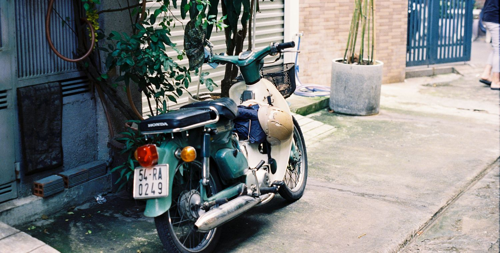
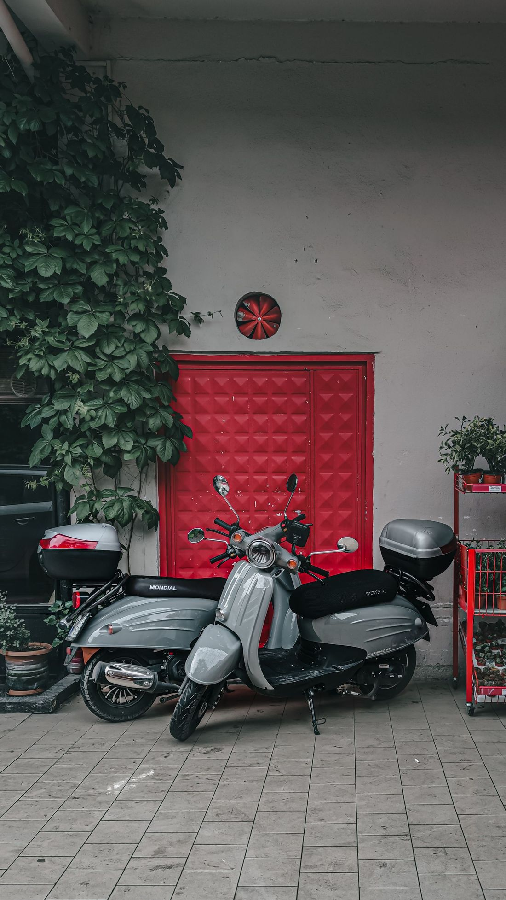
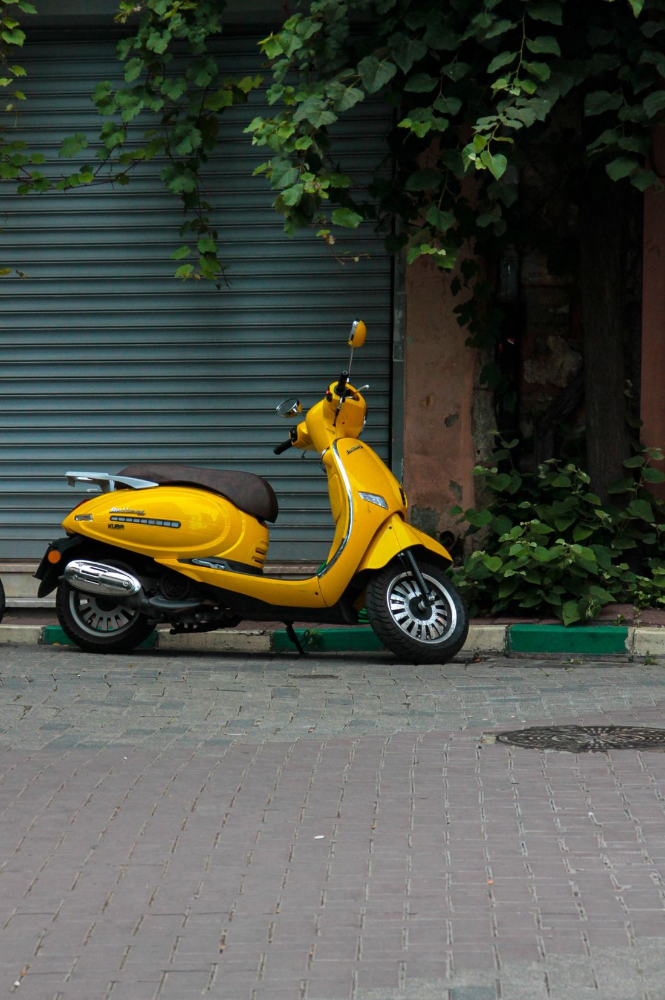
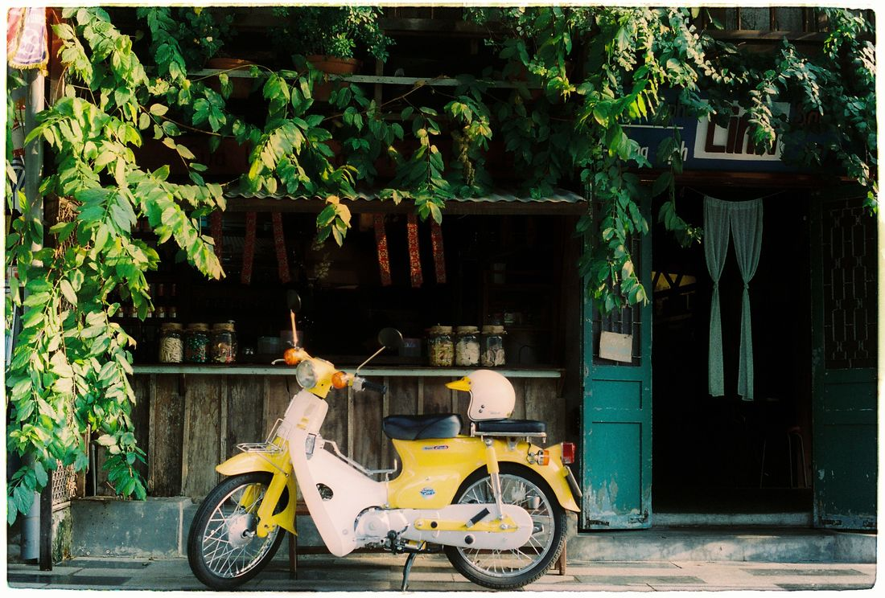
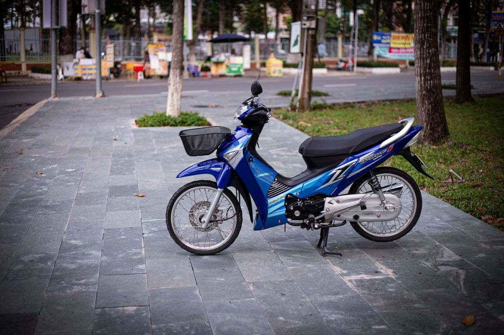

"50cc 오토바이"는 한 가지 모델이 아니라 하나의 세계입니다. 베트남에서 이 배기량에는 초보용의 간단한 오토매틱 스쿠터부터, 스타일리시한 베스파풍 레트로, 거의 불멸의 엔진을 가진 상징적인 혼다 커브, 기어가 있는 수동 바이크까지 모두 포함됩니다. 종류별로 정리해 — 매물에서 무엇을 보는지, 나에게 무엇이 맞는지 알 수 있게 해드립니다.
중요: 베트남에서 배기량 50cc 이하는 면허가 필요 없는 범주입니다 — 그래서 관광객과 장기 체류자가 좋아합니다. 자세히는 "50cc에 면허가 필요한가" 참고.

가장 인기 있고 간단한 종류 — 베트남어로 xe ga. 기어가 없습니다: 스로틀을 돌리면 갑니다. 시트 아래에는 헬멧과 짐을 넣는 넉넉한 수납공간이 있습니다. 초보, 시내 주행, 짧은 이동에 완벽합니다.
대표 모델: 혼다 비전, 혼다 스쿠피, 같은 형태의 현지 스쿠터. 장점 — 단순함과 편안함. 단점 — 오토매틱 변속기(CVT)는 수동보다 수리비가 다소 비쌉니다.

역시 오토매틱이지만 클래식 베스파에서 영감받은 둥근 빈티지 디자인입니다. 베트남에는 많습니다 — 현지 브랜드(Nioshima, Elegant 등)가 이런 50cc를 저렴하게 만듭니다. 스타일 때문에 삽니다: 사진발이 좋고 바다를 배경으로 멋지며 재판매 시 가치가 유지됩니다.
기계적으로는 같은 간편한 오토매틱 스쿠터입니다. 차이는 주로 외관과 자세. 단순한 이동수단 이상을 원한다면 훌륭한 선택입니다.

베트남 도로의 전설. 혼다 커브와 비슷한 곡선 프레임 스텝스루는 반자동입니다: 기어는 있지만 클러치가 자동이라 레버를 쥘 필요가 없습니다. 엔진은 거의 파괴 불가능하고 수리비는 아주 싸며, 많은 이가 어떤 신형 스쿠터보다 이 빈티지 감성을 좋아합니다.
신뢰성과 개성 때문에 선택합니다. 완전 오토매틱보다 약간 까다롭지만(발로 기어 변속) 하루면 익숙해집니다.

이것이 xe so — 수동 변속과 스포티한 자세의 바이크입니다. 대표는 혼다 웨이브와 비슷한 언더본. 유지비가 가장 싸고 튼튼하며 오래갑니다. 가장 믿을 수 있고 수리하기 쉬운 이동수단을 원하는 장기 체류자에게 사랑받습니다.
초보에게 단점: 발로 직접 기어를 바꾸고 클러치를 느껴야 합니다. 수동을 타본 적 없다면 오토매틱으로 시작하고 웨이브는 나중에.
"50"이라 불리는 것이 모두 진짜 50cc는 아닙니다 — 50cc와 110cc는 똑같아 보일 수 있습니다. 유일하게 확실한 방법은 배기량이 적힌 서류(ca vet)와 엔진 번호 확인입니다. 그래서 저희는 경찰 데이터베이스로 조회된 깨끗한 서류가 있는 차량만 판매합니다 — "무면허"가 진실이 되도록, 경찰과의 놀랄 일이 아니라.
구체적인 차량 고르는 법과 구매 시 확인 사항은 "첫 50cc 고르는 법", 더운 기후 관리법은 "스쿠터 관리" 참고.